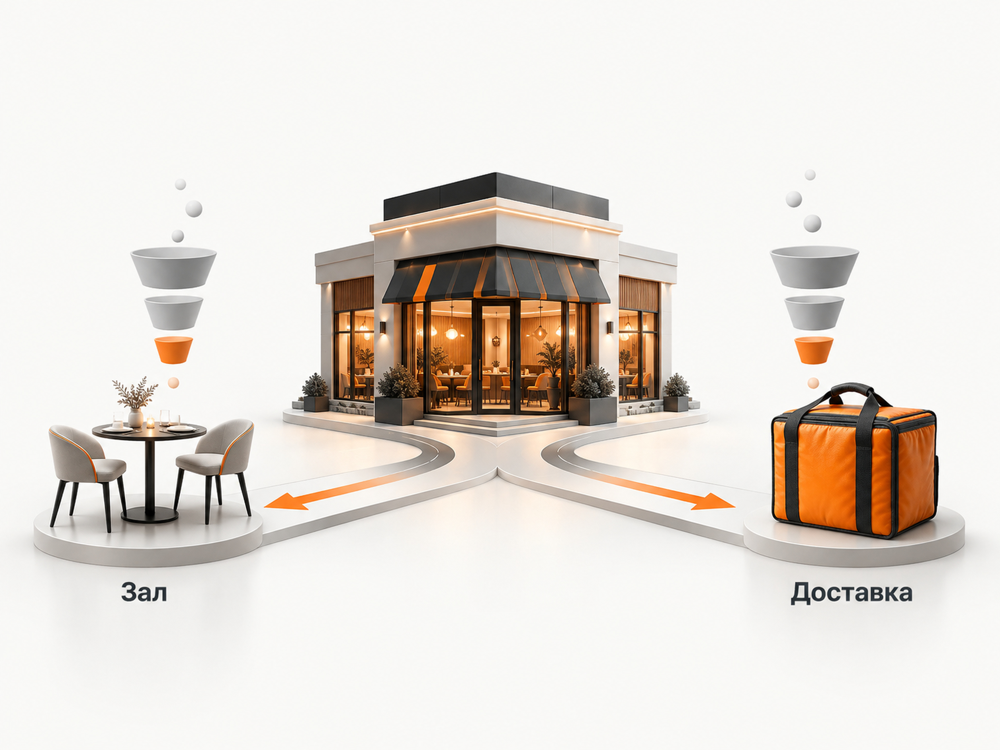
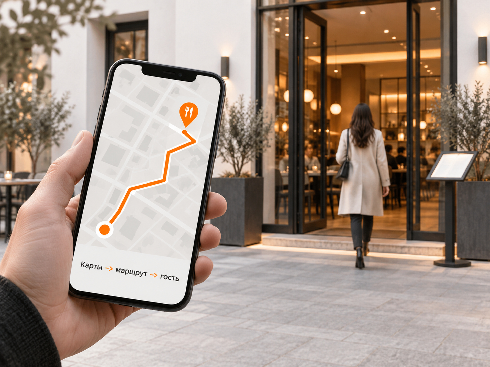
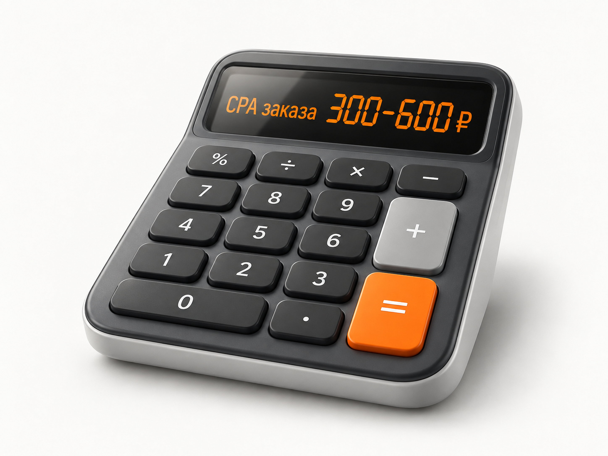

Блог о платном трафике
Продвижение ресторана и доставки еды в 2026 году: инструкция и прогноз
Продвижение ресторана и продвижение доставки еды я бы сразу разделял на две самостоятельные задачи.
Для ресторана основной результат - человек реально пришел в заведение и оставил деньги. Для доставки - оформленный и оплаченный заказ. У этих направлений разные запросы, посадочные страницы, рекламные кампании, аналитика и экономика.
Если все смешать в одну рекламу и считать общей целью звонки, переходы на сайт или построенные маршруты, понять реальную окупаемость будет сложно.
Что происходит с доставкой еды
Доставка уже стала полноценной частью ресторанного бизнеса. По исследованию Data Insight, проведенному в июле 2025 года среди более чем 2300 ресторанов в российских городах с населением от 100 тыс. человек, доставку имели 64% заведений. В городах-миллионниках показатель достигал 72%. В среднем доставка обеспечивала больше четверти всех заказов ресторана.
Каналы распределены достаточно широко. Агрегаторы использовали для приема заказов 49% заведений, собственный сайт или приложение - 36%. При этом рестораны все чаще используют несколько способов доставки одновременно.
По данным BusinesStat, оборот российского рынка доставки из кафе, ресторанов и столовых вырос с 222 млрд рублей в 2021 году до 505 млрд рублей в 2025 году. Здесь речь идет о более широком рынке общепита, поэтому эту цифру нельзя переносить на отдельный ресторан, но направление роста хорошо видно.
Для владельца ресторана вывод простой: собственную доставку уже нельзя рассматривать как дополнительную кнопку на сайте. Это отдельная воронка продаж.
Ресторан и доставка - две разные воронки

Для зала я бы строил воронку так:
реклама -> карточка или сайт -> звонок / бронь / маршрут -> фактическое посещение -> выручка
Для доставки:
реклама -> меню -> корзина -> оплаченный заказ -> повторный заказ
Разница принципиальная.
Например, переход в карточку ресторана или регистрация в программе лояльности еще не означают, что человек пришел. В одном из опубликованных кейсов 2025 года на рекламу ресторана в РСЯ потратили 60 000 ₽. После оптимизации регистрация стоила 627 ₽, но фактически ресторан посетили только 14 зарегистрированных пользователей. Получается около 4 286 ₽ рекламных расходов на одного реально пришедшего нового гостя.
Поэтому оптимизировать рекламу ресторана только по промежуточной конверсии опасно.
С чего начинать продвижение ресторана
До запуска рекламы нужно подготовить четыре вещи:
- Карточку ресторана в Яндекс Картах.
- Сайт или страницу с понятным меню, ценами, адресом, временем работы и бронированием.
- Отдельную инфраструктуру заказа доставки.
- Аналитику, которая позволяет дойти максимально близко до денег.
Для доставки я бы обязательно передавал в Метрику оформленные заказы и их стоимость. Если заказы принимаются по телефону, понадобится коллтрекинг.
Для ресторана желательно связать звонки, бронирования и программу лояльности с фактическими посещениями. Иначе реклама может выглядеть эффективной по отчету, хотя касса этого не подтверждает.
Подробно про связку рекламных данных с бизнес-результатом я писал в статье про сквозную аналитику Яндекс Директа.
Продвижение ресторана в Яндекс Картах

Для ресторана Карты являются одним из базовых каналов, потому что здесь уже есть локальный сформированный спрос.
Человек ищет:
- ресторан рядом;
- ресторан итальянской кухни;
- где поесть;
- ресторан с верандой;
- ресторан для дня рождения;
- бизнес-ланч;
- кафе рядом с конкретной улицей или районом.
Организацию можно бесплатно добавить через Яндекс Бизнес и показывать в Поиске и Картах. Дополнительно Яндекс позволяет рекламировать организации в Картах, поисковой выдаче организаций и других своих сервисах.
Карточку нужно заполнять максимально полно:
- актуальное меню и цены;
- фотографии еды и интерьера;
- время работы;
- номер телефона;
- сайт;
- способы оплаты;
- особенности ресторана;
- ссылки для бронирования, если они доступны;
- ответы на отзывы.
Карты могут давать результат и без платного продвижения. В опубликованном кейсе ресторана «Камыши» за год количество переходов в профиль выросло до 9412, построений маршрутов - до 641, переходов на сайт - до 805, звонков - до 226. Это результат одного проекта, а не ориентир для любого ресторана, но он показывает потенциал хорошо проработанной локальной карточки.
Как запускать Яндекс Директ для ресторана
Я бы не создавал одну общую кампанию «Ресторан + доставка».
Минимум нужно разделить спрос по смыслу.
Реклама самого ресторана
Здесь подходят запросы с намерением посетить заведение:
- ресторан рядом;
- ресторан + район;
- ресторан + кухня;
- кафе + район;
- где поесть;
- бизнес-ланч;
- ресторан для дня рождения;
- банкет;
- ресторан с детской комнатой;
- ресторан с верандой.
Конкретный набор зависит от формата заведения.
Человека лучше вести на страницу ресторана, где сразу понятны кухня, средний чек, адрес, фотографии, меню и возможность забронировать стол.
Реклама доставки
У доставки другой спрос:
- доставка суши;
- заказать роллы;
- доставка пиццы;
- заказать бургеры;
- доставка еды;
- доставка еды ночью;
- доставка конкретного блюда или кухни.
Здесь пользователь обычно ближе к покупке, поэтому посадочная должна сразу вести к меню и оформлению заказа.
Подробный принцип разделения Поиска и рекламных сетей есть в моей статье о разделении Поиска и РСЯ.
Поиск для доставки еды
На старте я бы в первую очередь забирал сформированный спрос.
Кампании можно разделить по категориям:
- бренд;
- общая доставка еды;
- кухни;
- конкретные блюда;
- географические запросы;
- акции и специальные предложения.
Географию нужно ограничивать реальной зоной доставки.
Если ресторан физически способен привезти заказ только в радиусе нескольких километров, нет смысла покупать трафик со всего города.
Отдельно нужно регулярно смотреть реальные поисковые запросы и добавлять минус-фразы. Особенно много мусора может появляться вокруг рецептов, вакансий, бесплатной еды, доставки продуктов и запросов к конкретным конкурентам.
Про работу с исключениями есть отдельная инструкция по минус-фразам.
РСЯ и Мастер кампаний
РСЯ имеет смысл использовать для расширения охвата, возврата посетителей и продвижения конкретных предложений.
Для еды визуал особенно важен. Я бы тестировал:
- реальные фотографии блюд;
- наборы и комбо;
- бесплатную доставку при выполнении условий;
- подарок к заказу;
- скидку на первый заказ;
- предложение для определенного времени суток.
В одном из свежих ресторанных кейсов профессиональные фотографии реальных блюд стали частью работающей рекламной связки. Там конверсия сайта выросла с 6,7% до 12%, а стоимость привлечения заказа снизилась примерно вдвое. Это результат конкретной доставки, а не универсальная цифра.
В 2026 году при работе с ЕПК нужно учитывать переход Яндекса на комбинаторные объявления. Для доставки в объявлении можно передавать условия доставки: тип, стоимость, порог бесплатной доставки, срок и регион. Эти элементы могут показываться в РСЯ.
Если данных мало, я бы не дробил кампанию на десятки мелких частей. Алгоритму нужны конверсии для обучения.
Для небольшого ресторана одна нормально обучающаяся кампания часто полезнее пяти кампаний, в каждой из которых происходит по несколько заказов в неделю.
Сайт доставки влияет на рекламу не меньше настроек Директа
Реклама может приводить хороший трафик и при этом не давать заказов из-за самого сайта.
В свежем кейсе сети пиццерий во Владивостоке и Находке при анализе нашли сразу несколько проблем:
- всплывающее окно мешало пользоваться сайтом;
- кнопка проверки зоны доставки работала некорректно;
- возникала ошибка при вставке телефона;
- условия бесплатной доставки проигрывали конкурентам;
- минимальная сумма заказа была выше многих конкурентов.
После изменений и оптимизации рекламы конверсия во Владивостоке выросла примерно в 5 раз, в Находке - почти в 3 раза. Стоимость обращения стала примерно в 1,5 раза ниже установленного KPI 700 ₽.
Поэтому перед увеличением рекламного бюджета я бы обязательно проверил:
- насколько быстро открывается меню на телефоне;
- легко ли добавить товар в корзину;
- видно ли минимальную сумму заказа;
- понятна ли стоимость доставки;
- понятна ли зона доставки;
- можно ли быстро оплатить;
- не появляются ли лишние формы и окна;
- нет ли ошибок на последнем шаге оформления.
Каждый дополнительный барьер непосредственно увеличивает стоимость заказа.
Собственная доставка или агрегаторы
Я бы не противопоставлял эти каналы.
Агрегатор дает доступ к уже сформированному спросу. Пользователь открывает приложение именно для выбора еды.
Собственный сайт дает больше контроля над клиентом, рекламой, аналитикой, повторными заказами и базой покупателей.
Поэтому для многих ресторанов рабочая модель выглядит так:
агрегаторы для дополнительного спроса + собственный сайт для развития своей клиентской базы
При сравнении каналов нужно считать всю экономику заказа:
- рекламные расходы;
- комиссия площадки;
- стоимость доставки;
- упаковка;
- скидка;
- себестоимость еды;
- эквайринг;
- бонусы;
- возвраты и отмены.
Сравнивать только цену клика или даже стоимость заказа недостаточно.
SEO для ресторана и доставки
SEO имеет смысл развивать параллельно, особенно если ресторан работает долго и не собирается зависеть только от платного трафика.
Для доставки полезны отдельные посадочные страницы под реальные категории спроса:
- доставка пиццы;
- доставка суши;
- доставка бургеров;
- доставка конкретной кухни;
- отдельные районы, если там действительно различаются условия доставки.
Создавать десятки одинаковых страниц с заменой названия района не нужно. Страница должна реально отвечать на запрос и содержать полезную информацию.
Для самого ресторана важнее локальная выдача, Карты, брендовый спрос, меню, отзывы и страницы под конкретные услуги вроде банкетов или бизнес-ланчей.
Что показывают свежие кейсы 2025-2026 годов
Публичные кейсы дают большой разброс, поэтому я не стал бы искать одну «среднюю стоимость заказа по рынку».
| Проект | Опубликованный результат | Что из этого можно использовать |
|---|---|---|
| Доставка суши и роллов, Рязань | 434 351 ₽ расходов, 2241 обращение, около 194 ₽ за лид | Хороший ориентир стоимости обращения, но лид нельзя автоматически считать оплаченным заказом |
| Доставка чебуреков | 4852 заказа за 2025 год, около 295 ₽ за заказ | Один из ориентиров стоимости оплаченного заказа в региональном проекте |
| Доставка еды, Волгодонск | заявлено около 389 ₽ за заказ | Полезный ориентир CPA, но опубликованные данные по месячному расходу и числу заказов между собой не полностью сходятся, поэтому бюджет этого кейса я бы не использовал для прогноза |
| EDA LOVE | около 570 ₽ за оплаченный заказ из контекстной рекламы | Еще один свежий ориентир стоимости заказа в региональном проекте |
| Rollos, Саратов | конверсия сайта выросла с 6,7% до 12%, CPA снизился до 4,1% от среднего чека | Показывает, почему CPA правильнее оценивать относительно среднего чека и экономики заказа |
Получается, в нескольких свежих кейсах, где опубликована именно стоимость заказа, встречается диапазон примерно 295-570 ₽.
Я бы округлил его для первоначального прогноза до 300-600 ₽ за оплаченный заказ.
Это не среднее значение российского рынка. Это рабочий расчетный диапазон на основе нескольких опубликованных региональных кейсов 2025-2026 годов.
Для Москвы, дорогой кухни, слабого сайта, небольшой зоны доставки или очень высокой конкуренции реальная стоимость может быть заметно выше.
Прогноз рекламы доставки еды

Возьмем рабочий диапазон CPA 300-600 ₽.
При рекламном бюджете 100 000 ₽ расчет выглядит так:
| Стоимость заказа | Заказы с рекламы |
|---|---|
| 300 ₽ | около 333 |
| 450 ₽ | около 222 |
| 600 ₽ | около 167 |
Формула простая:
Количество заказов = рекламный бюджет / CPA
При рабочем сценарии 450 ₽ за заказ бюджет 100 000 ₽ должен дать примерно 222 заказа.
Это прогноз, а не обещание результата.
В небольшом городе спрос может закончиться раньше, чем бюджет. В крупном городе рекламной емкости будет больше, но выше может оказаться и конкуренция.
Свежие региональные кейсы показывают бюджеты примерно от 40-100 тыс. ₽ в месяц на начальных этапах до 150-400 тыс. ₽ после масштабирования работающей рекламы. Поэтому для первоначального теста собственной доставки регионального ресторана я бы ориентировался примерно на 60-100 тыс. ₽ рекламного бюджета в месяц, если сайт, ассортимент и зона доставки уже подготовлены.
Подробно сам принцип расчета описан в статье о прогнозе бюджета Яндекс Директа.
Как понять, допустимы ли 300, 500 или 700 ₽ за заказ
Сама по себе стоимость заказа ничего не говорит об эффективности.
Предположим:
- средний чек - 1500 ₽;
- после себестоимости продуктов, упаковки, доставки и остальных переменных расходов ресторану остается 35%;
- маржинальный доход с одного заказа - 525 ₽.
Это условный пример, а не средний показатель ресторанного рынка.
При CPA 300 ₽ после первого заказа остается 225 ₽ маржинального дохода до покрытия постоянных расходов.
При CPA 450 ₽ остается 75 ₽.
При CPA 600 ₽ первый заказ сам по себе уже не окупает привлечение клиента.
Но если клиент делает второй заказ без повторных рекламных затрат, экономика меняется.
Два заказа дают 1050 ₽ маржинального дохода:
- при CPA 300 ₽ остается 750 ₽;
- при CPA 450 ₽ - 600 ₽;
- при CPA 600 ₽ - 450 ₽.
Поэтому ресторану особенно важно считать повторные покупки.
Для доставки я бы следил минимум за четырьмя показателями:
CPA заказа -> средний чек -> ДРР -> повторные заказы
Про расчет доли рекламных расходов есть отдельная статья о ДРР.
Повторные заказы могут быть важнее первого CPA
У ресторанной доставки есть большое преимущество перед многими услугами: хороший клиент способен заказывать регулярно.
Поэтому после первой покупки нужно переводить человека в собственную систему коммуникации:
- программа лояльности;
- приложение;
- SMS;
- email;
- push-уведомления;
- собственная база;
- ретаргетинг.
Задача рекламы состоит не в бесконечной покупке одного и того же клиента заново.
Если первый заказ обходится в 500 ₽, а затем человек заказывает еще пять раз напрямую, такой клиент может быть значительно выгоднее клиента за 250 ₽, который больше никогда не вернулся.
Поэтому масштабировать ресторанную доставку по одному CPA первого заказа я бы не стал.
Что рекламировать
Для ресторана оффер зависит от ситуации потребления.
Для зала это могут быть:
- бизнес-ланч;
- семейный ужин;
- день рождения;
- банкет;
- свидание;
- завтрак;
- конкретная кухня;
- мероприятие;
- сезонное меню.
Для доставки:
- конкретное популярное блюдо;
- набор;
- комбо;
- предложение на первый заказ;
- подарок;
- бесплатная доставка от определенной суммы;
- акция в непиковое время.
Постоянная скидка «-20% на все» обычно быстро превращает рекламу в соревнование ценой.
Гораздо полезнее тестировать предложения вместе с экономикой заказа и смотреть, увеличивает ли акция итоговую прибыль.
Что делать по шагам
Первые 7 дней
Проверить:
- Карточку в Яндекс Картах.
- Сайт ресторана.
- Мобильную версию меню.
- Корзину.
- Зону доставки.
- Минимальный заказ.
- Условия бесплатной доставки.
- Средний чек.
- Маржинальный доход с заказа.
- Долю повторных заказов.
Настроить электронную коммерцию в Метрике, звонки и остальные значимые цели.
Вторая неделя
Запустить отдельно:
- Поиск по доставке;
- Поиск по ресторану;
- брендовые запросы;
- РСЯ или Мастер кампаний для тестирования дополнительных аудиторий;
- продвижение в Картах, если оно требуется.
Не смешивать зал и доставку в одну общую цель.
Третья и четвертая недели
Смотреть:
- реальные поисковые запросы;
- расход по географии;
- время заказов;
- устройства;
- категории меню;
- CPA;
- средний чек;
- ДРР;
- количество оплаченных заказов.
Отключать то, что дает трафик без продаж.
Второй месяц
Если экономика сходится:
- увеличивать бюджет;
- расширять семантику;
- тестировать новые креативы;
- подключать ретаргетинг;
- усиливать работающие часы и районы;
- развивать собственную клиентскую базу.
Если экономика не сходится, сначала искать причину, а не увеличивать бюджет.
Основные ошибки продвижения ресторана
Считать заявки вместо денег. Для доставки нужна покупка, для зала желательно реальное посещение.
Объединять ресторан и доставку. Это разные продукты и разные воронки.
Не учитывать повторные заказы. Из-за этого прибыльный канал может выглядеть слишком дорогим.
Игнорировать сайт. Неудобная корзина способна испортить даже качественный трафик.
Рекламироваться за пределами нормальной зоны доставки. Чем дальше клиент, тем хуже экономика и качество сервиса.
Дробить небольшой объем конверсий между множеством кампаний. Автоматическим стратегиям становится сложнее обучаться.
Оценивать рекламу только по CPA. Нужно учитывать средний чек, ДРР, маржинальный доход и LTV.
Зависеть от одного агрегатора. Ресторану выгодно постепенно накапливать собственную клиентскую базу.
Какой результат я бы закладывал в прогноз
Для региональной доставки с нормальным сайтом и уже работающим продуктом первоначальная модель выглядит так:
- рекламный бюджет - 60-100 тыс. ₽ в месяц;
- расчетная стоимость оплаченного заказа - 300-600 ₽;
- при 100 тыс. ₽ - примерно 167-333 заказа;
- рабочая средняя точка модели - около 450 ₽ и 222 заказов.
Это стартовая модель на основе свежих опубликованных кейсов, а не норматив.
После первого месяца прогноз нужно полностью пересчитать по собственным данным ресторана.
Для продвижения зала универсальный CPA я бы не закладывал. Слишком сильно отличаются средний чек, формат ресторана, город и способ фиксации посещения. Здесь сначала нужно получить стоимость бронирования, звонка или другого действия, а затем связать его с фактическим гостем и выручкой.
Если нужен запуск Яндекс Директа для ресторана или доставки, описание моей работы и кейсов есть на моем сайте.